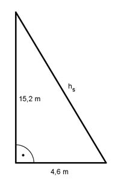

Aufgabe 217 Zwei Kirchtürme haben als Dach quadratische Pyramiden (Seitenlänge der Grundfläche 9,2 m, Höhe der Pyramide 15,2 m) und sind aus 10 mm dickem Kupferblech (ρ = 8,9 kg/dm³). Wie schwer ist die Bedachung?  Satz von Pythagoras: hs² = 15,2² m² + 4,6² m² hs² = 252,2 m² | √ hs = 15,9 m Die Mantelfläche M besteht aus 8 gleich großen Seitenflächen 9,2 m * 15,9 m M = 8 * ------------------ = 585,1 m² 2 ρ = 8,9 kg/dm³ = 8,9 t/m³ V = M * Dicke * ρ Dicke = 10 mm = 0,01 m m = V * ρ m = 585,1 m² * 0,01 m * ρ = 5,837 m³ * 8,9 t/m³ = 52,1 t